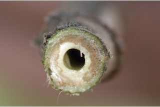
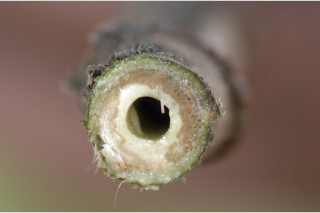

Images :


 



| Habit : | Shrubs to medium sized trees , up to 10 m tall. |
| Leaves : | Leaves simple , opposite , decussate ; stipules to 2.5 x 1 cm, caducous , leaving annular scar ; petiole 1-10 cm long, canaliculate , hispid; lamina 7-35 x3-16 (40 x 18 cm in saplings), elliptic-oblong , narrow ovate , narrow obovate , apex caudate - acuminate , base rounded subcordate or truncate - subcordate , margin entire or dentate sometimes irregularly toothed , scabrid on both surface, hispid beneath; midrib slightly raised above; 3-nerved at base; secondary_nerves 4-9 pairs, often branched, ascending; tertiary_nerves broadly reticulo-percurrent . |
| Inflorescence / Flower : | Inflorescence syconia, clustered on tubercles of main trunk , older branches and sometimes on pendulous leafless branches ; flowers unisexual . |
| Fruit and Seed : | Syconium, globose , up to 2.5 cm across. |